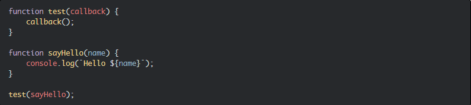

Top JavaScript Interview
Questions And Answers [2022]
This blog contains frequently asked Javascript interview questions. These Javascript interview questions are asked in each and every interview. This blog will help you to crack an interview and get yourself a dream job.
So, without wasting a time let’s check these Javascript interview questions one by one.
Basic Javascript interview questions
1. What is JavaScript?
Javascript is an interpreted language. Because of the newer ECMAScript feature, it can be compiled as well. A browser is responsible to execute or run the Javascript using web APIs. We can use Node.js to execute the Javascript outside of the browser as well. So, web APIs are responsible to execute Javascript inside the browser. While Node.js APIs are responsible to execute the Javascript outside the browser.
2. What are the features of JavaScript?
- Interpreted
- Dynamically typed
- Platform independent
- Object based
- Light-weight
- Synchronous
- Single-threaded
3. JavaScript Data Types
JavaScript supports 2 data types
- Primitive
- Object
Primitive Data Types
- Bigint
- Boolean
- Null
- Number
- String
- Symbol
- Undefined
Object Data Types
- Object
- Array
- Map
- Set
- Date
- Error
- Json
4. What is ECMAScript?
ECMAScript is a specification to write standard Javascript. It provides some rules and regulations. Browsers implement these rules to create Javascript engines.
5. What are different versions of ECMAScript?
| Version | Description and Release |
|---|---|
| ES1 | June 1997 |
| ES2 | June 1998 |
| ES3 | June 1999 |
| ES4 | Abandoned |
| ES5 | December 2009 |
| ES6 | June 2015 (ES2015) |
| ES7 | June 2016 (ES2016) |
| ES8 | June 2017 (ES2017) |
| ES9 | June 2018 (ES2018) |
| ES10 | June 2019 (ES2019) |
| ES11 | June 2020 (ES2020) |
6. What are features of ES6?
Here is the list of ES6 features.
- let and const Keywords
- Arrow Functions
- Default Parameters
- Template Strings
- Destructuring Assignment
- Enhanced Object Literals
- Rest Parameters
- Spread Operator
- Promises
- Classes
- Modules
7. What are scopes in Javascript?
The scope refers to the current execution context. It specifies the accessibility of variables and functions. There are three scopes in Javascript.
- Global scope
- Function scope
- Block scope
8. Difference between let, var, and const
| var | let | const |
|---|---|---|
| Available from the beginning. | Introduced in ES6. | Introduced in ES6. |
| Global as well as function scoped. | Block scoped. | Block scoped. |
| Can re-declare and update. | Cannot re-declare but it can be updated | Neither re-declare nor update. |
| Hoisted and initialized to undefined. | Hoisted but not initialized. | Hoisted but not initialized. |
9. Which one should we use between let, var, and const?
- Always declare variables with the const keyword.
- If the value of a variable is going to change in the future, then declare it with the let keyword.
- Avoid using the var keyword.
10. What is Temporal Dead Zone?
The Temporal Dead Zone is the behavior of Javascript where the state of a variable is not reachable. It only happens when we declare a variable with the let and const keyword. Accessing a variable with let and const before its declaration causes the Reference Error.
11. What is hoisting?
The hoisting is the process of moving variable and function declarations to the top of the scope. Javascript only hoists declaration. It does not hoist initializations.
12. Whether Javascript is object-oriented or object-based?
Javascript is object-based in nature. Because it does not support polymorphism. Polymorphism consists of method overloading and method overriding. There is no concept of overloading or overriding in Javascript. The default behavior of Javascript is to overwrite the function. Hence Javascript is an object-based programming language.
Javascript interview questions on asynchronous operations
13. Is Javascript synchronous or asynchronous?
Javascript is synchronous and blocking in nature. Synchronous means to execute code in sequence. It does not execute the next block of code until and unless the execution of earlier code.
14. How does Javascript execute asynchronous code?
Javascript uses callbacks, promises and async/await to execute asynchronous code.
15. What is callback?
The callback is a function passed to another function as an argument. This passed function executes later. Usually, callbacks achieve asynchronous operations in Javascript.
16. What is callback hell?
The callback hell happens when we use multiple nested callbacks. This problem occurs for dependent asynchronous operations (where we need to wait for the result of the previous asynchronous call).
17. How can we avoid callback hell?
We can avoid the callback hell problem by using promise and async-await.
18. What is promise?
The promise is useful to achieve asynchronous programming in Javascript. It is an object representing the completion or failure of an asynchronous operation.
The promise was introduced in ES6. It was introduced to overcome the limitations caused by the callback. The promise is useful for single as well as multiple asynchronous operations.
19. What are the states of promise?
A promise can be in one of these states:
- Pending: initial state, neither fulfilled nor rejected.
- Fulfilled: meaning that the operation completes successfully.
- Rejected: meaning that the operation failed.
20. What is promise chaining?
Promise chaining means passing a promise to another promise. Sometimes, we have to make an asynchronous call based on the result of the previous asynchronous call. For this purpose, we can use promise chaining. We can achieve the promise chaining by using promise instance methods (then(), catch(), and finally()).

21. How can we achieve multiple parallel asynchronous requests using promise?
Sometimes we need to call multiple requests on a single page. We can achieve this by sending requests in parallel. The promise provides some helpful methods to work with parallel requests. Here is the list of methods.
- all()
- allSettled()
- any()
- race()
22. What is async and await?
The async keyword with a function represents that function as asynchronous. The async function returns the promise. Await keyword is used to represent the asynchronous operation inside the async function.
The async and await is syntactic sugar over the promise.